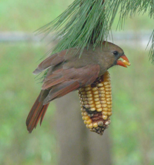

No other bird is as photogenic as the cardinal or "redbird" as some call it here in Indiana. I catch my breath whenever I see the male in his brilliant scarlet plumage. Against the snow, with his crest raised in the storm, he is spectacular! The male cardinal is all red, with black surrounding the base of the strong, cone-shaped, slightly overlapping beak.
The female is buff-colored below and grayish-brown above with a reddish bill, crest, wings and tail. Its loud cheerful call has been described as "cheer cheer cheer" and "purty purty purty" with many variations, including a whistle similar to someone calling a dog and a scolding "chip." The female sings as well as the male but in softer tones. The cardinals are about 8 ½ inches long.
Audubon wrote, "In richness of plumage, elegance of motion, and strength of song, this species surpasses all its kindred in the United States." He continued, "During the love-season the song is emitted with increased emphasis by this proud musician, who, as if aware of his powers, swells his throat, spreads his rosy tail, droops his wings, and leans alternately to the right and left, as if on the eve of expiring with delight at the delicious sounds of his own voice."
Its natural food includes insects, spiders, wild fruits and berries and weed seeds. At feeding stations it prefers sunflower and safflower seeds as well as cracked corn. It will eat grapes, especially during a dry spell. It hops on the ground to feed and also feeds in low shrubbery and trees not too high off the ground – up to about 15 feet.
I have seen a female cardinal clinging to the squirrels' dry cob of corn on a bungee cord (reference photo) to peck off a kernel and drop to the ground to crack it open. Cardinals like to eat perching, facing their food, so tray-type and "hopper" feeders will be more attractive to them.
In spring you will often see the male offering the female a seed. It is reported (Golden Bird Guide) that their beaks touch briefly before she takes the seed. Some say at this point – when she accepts the seed – they are engaged! The male continues to feed the female through egg-laying and incubation.
I believe cardinals nest every year in a big bridal wreath bush in my back yard. I'm not sure, as they are very cautious and secretive while incubating and raising their brood, and the bridal wreath's branches are closely entwined. When the leaves unfurl, it's impossible to see what lies within.
The female builds a nest of small twigs, bark strips, vines, leaves, rootlets and paper, lined with fine grass and hair. Two to five buff-colored eggs with dark marks incubate in less than two weeks. The young fledge in 9-11 days. Up to four broods may be raised in a breeding season, the male tending the young of a clutch while the female starts the next one.
Males defend their territories aggressively and may attack another male that ventures within it. They also indulge in "image fighting" when they see their reflection.
After the breeding season, cardinals will join flocks that may include other species. Cardinals can live up to 15 years in the wild. They do not migrate but tend to be nomadic within their range. Backyard feeding contributes to the cardinal's successful population increase and spread of range, which extends over most of the eastern USA, parts of extreme southeastern Canada, and southward through Mexico to Belize. It has also been introduced to Hawaii.
The cardinal's bright red coloring and its cheery song make it a popular visitor to residential areas. It is always a special treat for me to see and hear them.
A tribute to its popularity, the cardinal is the state bird of Illinois, Indiana, Kentucky, North Carolina, Ohio, Virginia and West Virginia.
